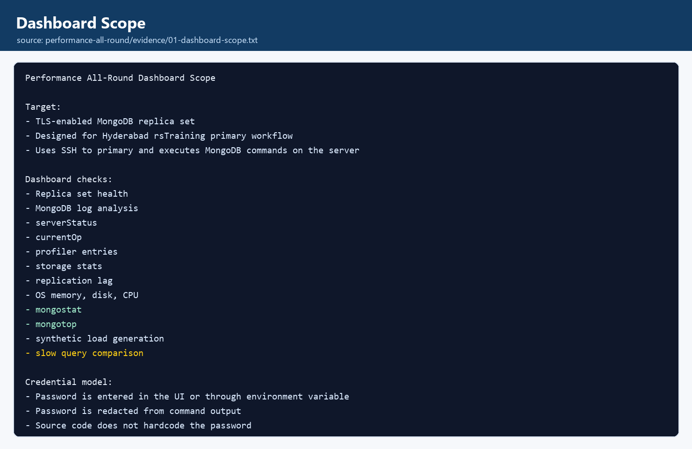
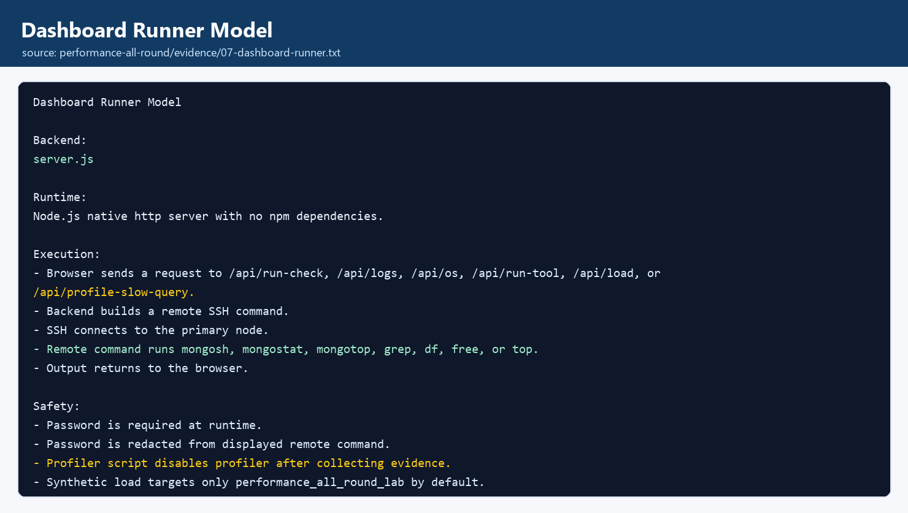
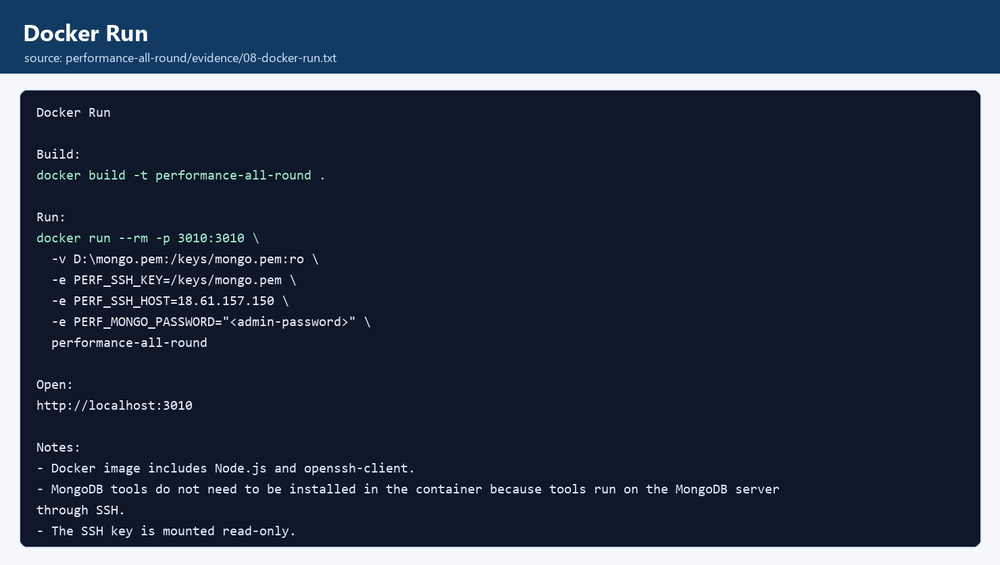
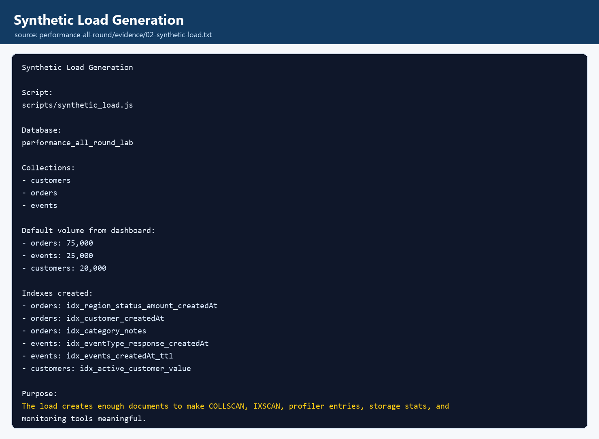
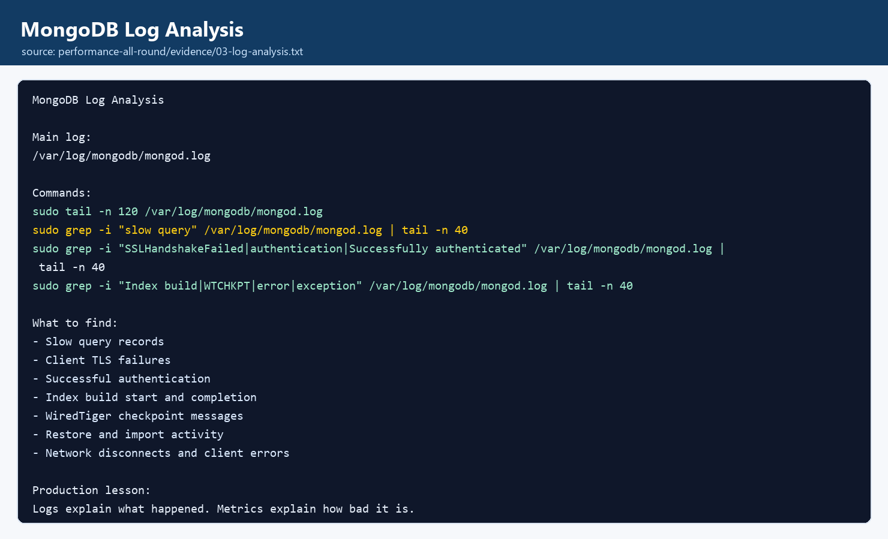
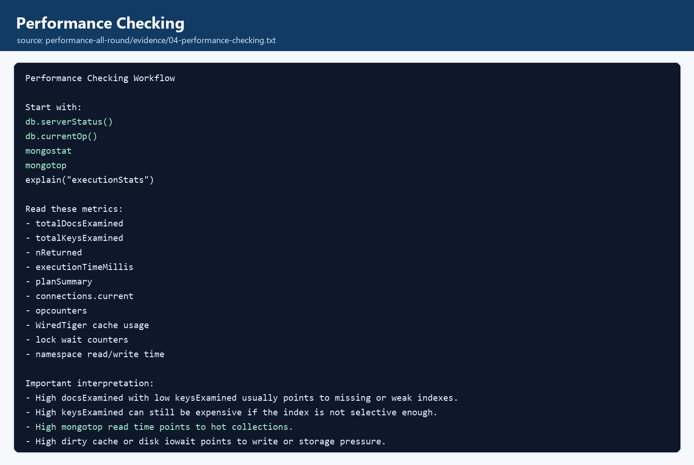
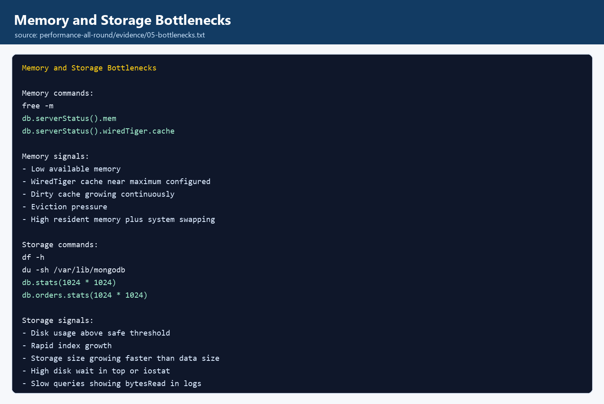
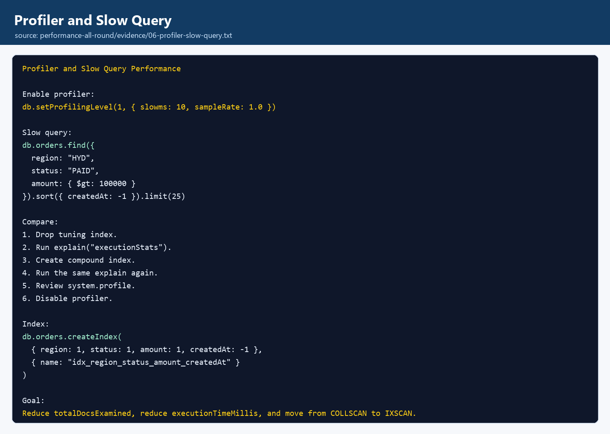

Contents
Purpose Run Dashboard Docker Synthetic Load Logs Performance Memory Storage Profiler Replication Runbook1. Project Purpose
performance-all-round is a dashboard plus tutorial project. It is meant to be useful during real MongoDB administration practice, not only as a static document.
| Layer | What It Does |
|---|---|
| Web dashboard | Runs MongoDB performance checks through SSH and shows output in the browser. |
| Synthetic load | Creates realistic collections and indexes so slow query, profiler, stats, and monitoring checks have meaningful data. |
| Command scripts | Reusable MongoDB scripts for load generation and slow query comparison. |
| Tutorial | Step-by-step commands, interpretation notes, and screenshot panels for every major topic. |

2. Run the Dashboard Locally
The app uses only Node.js built-in modules. No npm install is required.
cd D:\new-projects\mongodb-course\performance-all-round
$env:PERF_SSH_KEY="D:\mongo.pem"
$env:PERF_SSH_HOST="18.61.157.150"
$env:PERF_MONGO_PASSWORD="<admin-password>"
npm startOpen the dashboard:
http://localhost:3010Dashboard Buttons
- Replica Health checks
db.hello()andrs.status(). - Server Status captures connections, op counters, memory, WiredTiger cache, and locks.
- Analyze Logs tails MongoDB logs and filters slow query, TLS, and authentication messages.
- Memory / Disk runs
free -m,df -h, andtop. - mongostat and mongotop provide live command-line monitoring.
- Generate Load creates the lab database and indexes.
- Run Profiler Slow Query compares slow query performance before and after index creation.

3. Dockerized Run
The Docker image contains Node.js and openssh-client. MongoDB tools do not need to exist inside the container because they run on the MongoDB server through SSH.
cd D:\new-projects\mongodb-course\performance-all-round
docker build -t performance-all-round .
docker run --rm -p 3010:3010 `
-v D:\mongo.pem:/keys/mongo.pem:ro `
-e PERF_SSH_KEY=/keys/mongo.pem `
-e PERF_SSH_HOST=18.61.157.150 `
-e PERF_MONGO_PASSWORD="<admin-password>" `
performance-all-round
4. Synthetic Load Generation
The dashboard runs scripts/synthetic_load.js on the MongoDB primary. The script creates a clean lab database named performance_all_round_lab by default.
// Default collections
customers: 20000
orders: 75000
events: 25000
// Main tuning index
db.orders.createIndex(
{ region: 1, status: 1, amount: 1, createdAt: -1 },
{ name: "idx_region_status_amount_createdAt" }
)Why This Data Is Useful
orderssupports slow query tuning, index comparison, and stats.eventssupports high-volume monitoring and TTL examples.customerssupports partial index and lookup-style workloads.

5. Log Analysis Commands
Logs are the best source when you need to know exactly what MongoDB recorded: slow query, TLS failure, authentication, index build, restore, import, network disconnect, or storage warning.
sudo tail -n 120 /var/log/mongodb/mongod.log
sudo grep -i "slow query" /var/log/mongodb/mongod.log | tail -n 40
sudo grep -i "SSLHandshakeFailed\|authentication\|Successfully authenticated" /var/log/mongodb/mongod.log | tail -n 40
sudo grep -i "Index build\|WTCHKPT\|error\|exception" /var/log/mongodb/mongod.log | tail -n 40How to Read Log Evidence
planSummary: COLLSCANpoints to a query that scanned a collection.docsExaminedshows how much data MongoDB had to inspect.SSLHandshakeFailedusually means the client did not use TLS or used the wrong certificate chain.- Index build messages confirm index creation activity.

6. Performance Checking
Performance checking is a sequence: identify the expensive operation, read the plan, check server pressure, then fix the query or index.
db.serverStatus()
db.getSiblingDB("admin").aggregate([{ $currentOp: { allUsers: true, idleConnections: false } }])
db.orders.find({
region: "HYD",
status: "PAID",
amount: { $gt: 100000 }
}).sort({ createdAt: -1 }).limit(25).explain("executionStats")| Metric | Meaning |
|---|---|
totalDocsExamined | Documents MongoDB inspected. Lower is usually better. |
totalKeysExamined | Index keys MongoDB inspected. |
executionTimeMillis | Time spent executing the operation. |
planSummary | Quick signal such as COLLSCAN or IXSCAN. |

7. Memory Bottlenecks
Memory bottlenecks appear when MongoDB and the OS cannot keep the active working set in RAM. Watch WiredTiger cache, available memory, dirty bytes, eviction pressure, and swap.
free -m
const s = db.serverStatus()
printjson({
mem: s.mem,
cacheBytes: s.wiredTiger.cache["bytes currently in the cache"],
maxCacheBytes: s.wiredTiger.cache["maximum bytes configured"],
dirtyBytes: s.wiredTiger.cache["tracked dirty bytes in the cache"],
pagesRead: s.wiredTiger.cache["pages read into cache"],
pagesWritten: s.wiredTiger.cache["pages written from cache"]
})If cache is near maximum and pages read from disk keep increasing quickly, the workload may be larger than memory or queries may be scanning too much data.
8. Storage Bottlenecks
Storage bottlenecks can come from low disk space, slow disk reads, heavy checkpoints, large indexes, or write bursts.
df -h
sudo du -sh /var/lib/mongodb
use performance_all_round_lab
db.stats(1024 * 1024)
db.orders.stats(1024 * 1024)
db.events.stats(1024 * 1024)Signals
- Root disk usage above a safe threshold.
- Index size growing faster than expected.
- Slow query logs with large
bytesRead. - High disk wait in OS tools.

9. Profiling and Slow Query Performance
The profiler should be enabled for a short investigation window. The project script enables profiler, forces a baseline query, creates the supporting index, compares results, reads system.profile, and disables profiler.
use performance_all_round_lab
db.setProfilingLevel(1, { slowms: 10, sampleRate: 1.0 })
const filter = { region: "HYD", status: "PAID", amount: { $gt: 100000 } }
db.orders.find(filter).sort({ createdAt: -1 }).limit(25).explain("executionStats")
db.orders.createIndex(
{ region: 1, status: 1, amount: 1, createdAt: -1 },
{ name: "idx_region_status_amount_createdAt" }
)
db.orders.find(filter).sort({ createdAt: -1 }).limit(25).explain("executionStats")
db.system.profile.find({}, { ts: 1, millis: 1, docsExamined: 1, keysExamined: 1, planSummary: 1 }).sort({ ts: -1 }).limit(10)
db.setProfilingLevel(0)
10. Replica Set Health and Lag
Performance can look bad when secondaries lag, elections happen, or clients cannot reach advertised replica set members. Check replica health together with server metrics.
rs.status().members.map(m => ({
name: m.name,
stateStr: m.stateStr,
health: m.health,
optimeDate: m.optimeDate,
pingMs: m.pingMs,
syncSourceHost: m.syncSourceHost || ""
}))
rs.printReplicationInfo()
rs.printSecondaryReplicationInfo()11. All-Round Troubleshooting Runbook
- Confirm the primary with
db.hello(). - Check replica set health and lag with
rs.status(). - Run dashboard Server Status to inspect connections, op counters, memory, cache, and locks.
- Run dashboard Analyze Logs to inspect slow query, TLS, auth, and index build messages.
- Run dashboard Memory / Disk for OS-level pressure.
- Run mongostat for live server counters.
- Run mongotop to identify hot namespaces.
- Enable profiler briefly and capture
system.profile. - Use
explain("executionStats")to compare query plans. - Create or adjust indexes, then re-test the same query.
- Disable profiler after collecting evidence.
Manual Command List
See scripts/commands.md for a copyable command list.